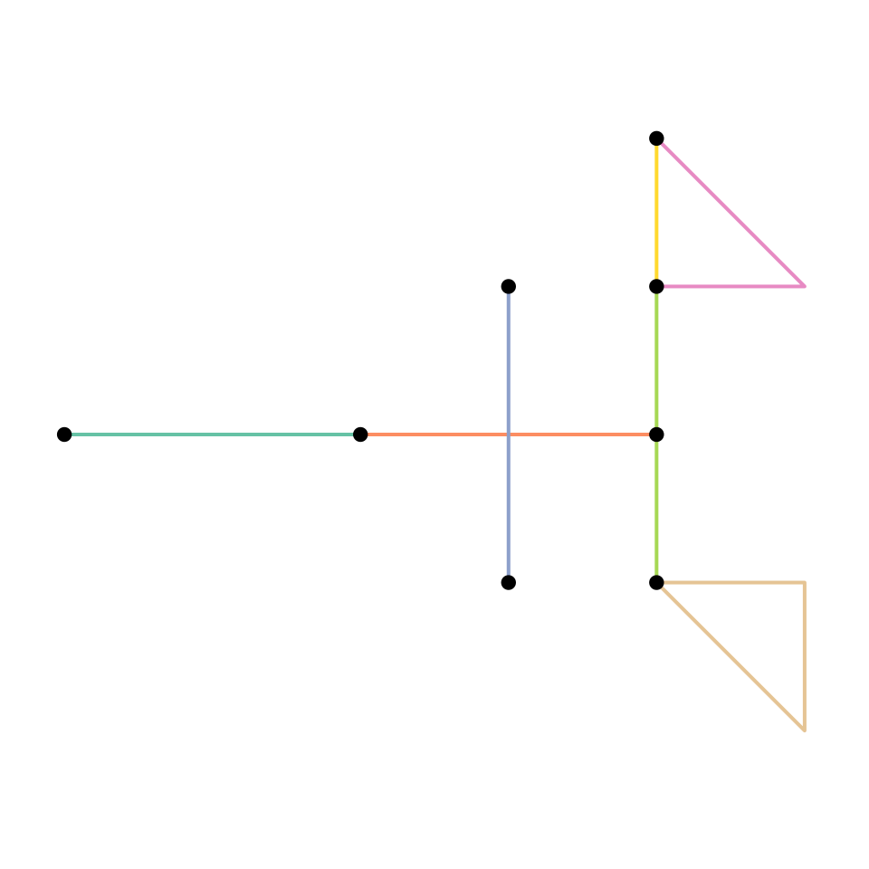
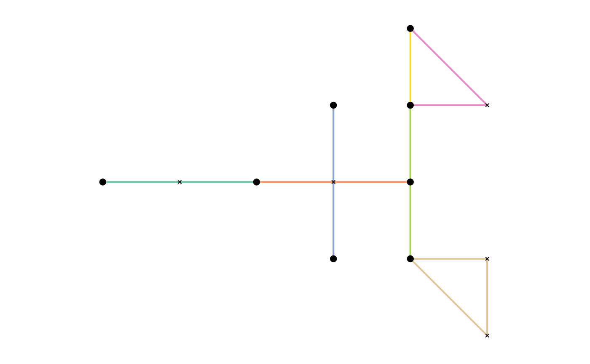
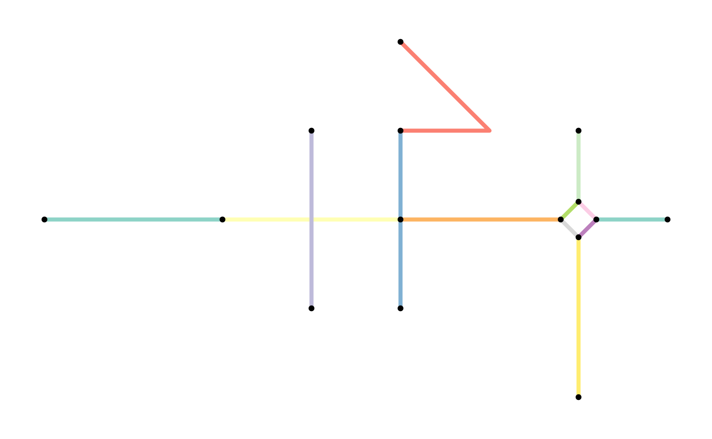
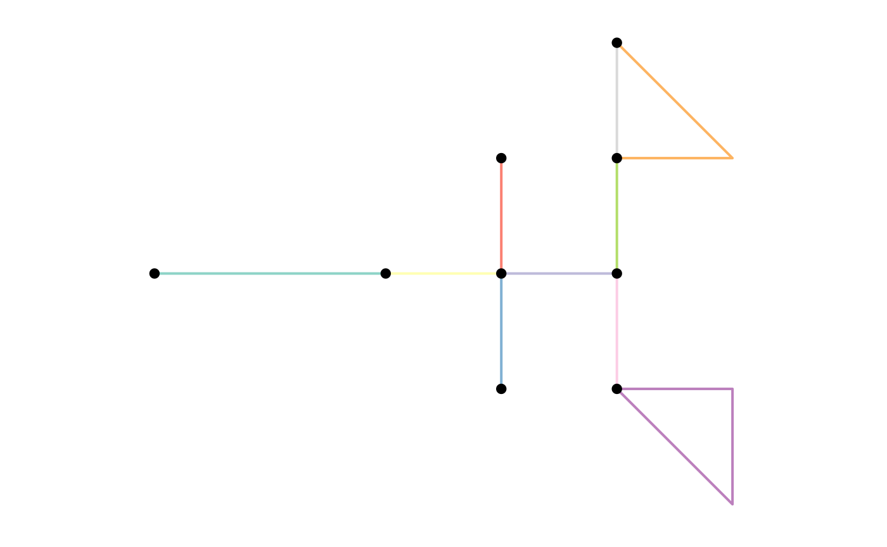
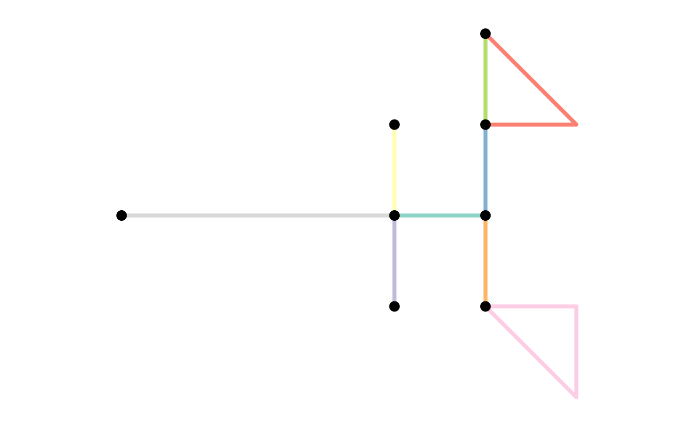
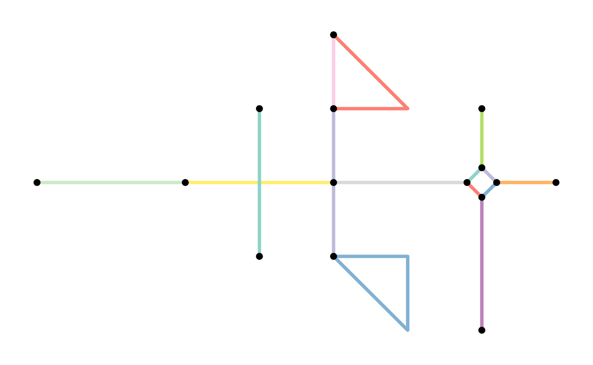
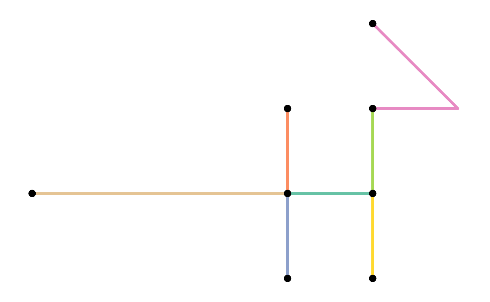
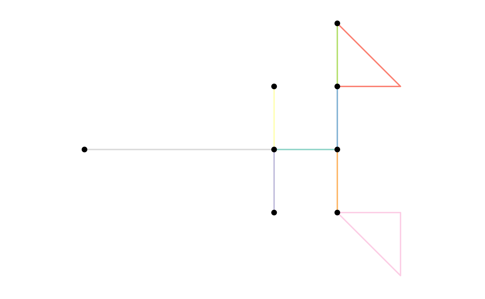

2. Network pre-processing and cleaning
2020-12-14
Source:vignettes/preprocess_and_clean.Rmd
preprocess_and_clean.RmdUnfortunately real-world datasets are not always as friendly as those used in tutorials. Pre-processing of the data will often be needed, as well as cleaning the network after construction. This vignette presents some examples that may be of use when going through this phase.
Common pre-processing tasks
Rounding coordinates
You might have a set of lines in which some endpoints are almost shared between two lines. However, the coordinates are stored with so much precision that there is a minor difference between the two points. When constructing a sfnetwork these lines will not be connected because the points are not exactly equal.
We can pre-process the lines by reducing the precision of the coordinates such that the points become exactly equal. A tiny example:
p1 = st_point(c(7, 51))
p2 = st_point(c(8, 52))
p3 = st_point(c(8.000001, 52.000001))
p4 = st_point(c(7, 52))
l1 = st_sfc(st_linestring(c(p1, p2)))
l2 = st_sfc(st_linestring(c(p3, p4)))
edges = st_as_sf(c(l1, l2), crs = 4326)
# The edges are not connected.
as_sfnetwork(edges)#> # A sfnetwork with 4 nodes and 2 edges
#> #
#> # CRS: EPSG:4326
#> #
#> # A rooted forest with 2 trees with spatially explicit edges
#> #
#> # Node Data: 4 x 1 (active)
#> # Geometry type: POINT
#> # Dimension: XY
#> # Bounding box: xmin: 7 ymin: 51 xmax: 8.000001 ymax: 52
#> x
#> <POINT [°]>
#> 1 (7 51)
#> 2 (8 52)
#> 3 (8.000001 52)
#> 4 (7 52)
#> #
#> # Edge Data: 2 x 3
#> # Geometry type: LINESTRING
#> # Dimension: XY
#> # Bounding box: xmin: 7 ymin: 51 xmax: 8.000001 ymax: 52
#> from to x
#> <int> <int> <LINESTRING [°]>
#> 1 1 2 (7 51, 8 52)
#> 2 3 4 (8.000001 52, 7 52)
# Round coordinates to 0 digits.
st_geometry(edges) = st_geometry(edges) %>%
lapply(function(x) round(x, 0)) %>%
st_sfc(crs = st_crs(edges))
# The edges are connected.
as_sfnetwork(edges)#> # A sfnetwork with 3 nodes and 2 edges
#> #
#> # CRS: EPSG:4326
#> #
#> # A rooted tree with spatially explicit edges
#> #
#> # Node Data: 3 x 1 (active)
#> # Geometry type: POINT
#> # Dimension: XY
#> # Bounding box: xmin: 7 ymin: 51 xmax: 8 ymax: 52
#> x
#> <POINT [°]>
#> 1 (7 51)
#> 2 (8 52)
#> 3 (7 52)
#> #
#> # Edge Data: 2 x 3
#> # Geometry type: LINESTRING
#> # Dimension: XY
#> # Bounding box: xmin: 7 ymin: 51 xmax: 8 ymax: 52
#> from to x
#> <int> <int> <LINESTRING [°]>
#> 1 1 2 (7 51, 8 52)
#> 2 2 3 (8 52, 7 52)
Dealing with one-way edges
In sfnetworks you can create directed and undirected networks. In directed ones, an edge can only be traveled from its start node to its end node. In undirected ones, an edge can be traveled both ways. However, in the real world there are networks where some edges can be traveled both ways and some edges only one way. For example, a road network in a city where there are one-way streets.
Unfortunately, neither igraph nor tidygraph provides an interface for such networks. Therefore, the only way to deal with this is to create a directed network but first duplicate and reverse all edge linestrings that can be traveled both ways.
See the small example below, where we have three lines with one-way information stored in a oneway column. One of the lines is a one-way street, the other two are not. By duplicating and reversing the two linestrings that are not one-way streets, we create a directed network that correctly models our situation.
p1 = st_point(c(7, 51))
p2 = st_point(c(7, 52))
p3 = st_point(c(8, 52))
l1 = st_sfc(st_linestring(c(p1, p2)))
l2 = st_sfc(st_linestring(c(p1, p3)))
l3 = st_sfc(st_linestring(c(p3, p2)))
edges = st_as_sf(c(l1, l2, l3), crs = 4326)
edges$oneway = c(TRUE, FALSE, FALSE)
edges
#> Simple feature collection with 3 features and 1 field
#> geometry type: LINESTRING
#> dimension: XY
#> bbox: xmin: 7 ymin: 51 xmax: 8 ymax: 52
#> geographic CRS: WGS 84
#> x oneway
#> 1 LINESTRING (7 51, 7 52) TRUE
#> 2 LINESTRING (7 51, 8 52) FALSE
#> 3 LINESTRING (8 52, 7 52) FALSE
duplicates = edges[!edges$oneway, ]
reversed_duplicates = st_reverse(duplicates)
edges = rbind(edges, reversed_duplicates)
net = as_sfnetwork(edges)
activate(net, "edges")#> # A sfnetwork with 3 nodes and 5 edges
#> #
#> # CRS: EPSG:4326
#> #
#> # A directed simple graph with 1 component with spatially explicit edges
#> #
#> # Edge Data: 5 x 4 (active)
#> # Geometry type: LINESTRING
#> # Dimension: XY
#> # Bounding box: xmin: 7 ymin: 51 xmax: 8 ymax: 52
#> from to oneway x
#> <int> <int> <lgl> <LINESTRING [°]>
#> 1 1 2 TRUE (7 51, 7 52)
#> 2 1 3 FALSE (7 51, 8 52)
#> 3 3 2 FALSE (8 52, 7 52)
#> 4 3 1 FALSE (8 52, 7 51)
#> 5 2 3 FALSE (7 52, 8 52)
#> #
#> # Node Data: 3 x 1
#> # Geometry type: POINT
#> # Dimension: XY
#> # Bounding box: xmin: 7 ymin: 51 xmax: 8 ymax: 52
#> x
#> <POINT [°]>
#> 1 (7 51)
#> 2 (7 52)
#> 3 (8 52)
Network cleaning functions
The sfnetworks package contains a set of spatial network specific cleaning functions. They are currently modeled as spatial morphers. To learn more about spatial morphers and what they are, see the dedicated vignette for that. For now, it is sufficient to know that you can use any spatial morpher function inside the tidygraph::convert() verb to convert your network into a different state.
Before presenting the cleaning functions that are currently implemented, lets create a network to be cleaned.
p1 = st_point(c(0, 1))
p2 = st_point(c(1, 1))
p3 = st_point(c(2, 1))
p4 = st_point(c(3, 1))
p5 = st_point(c(4, 1))
p6 = st_point(c(3, 2))
p7 = st_point(c(3, 0))
p8 = st_point(c(4, 3))
p9 = st_point(c(4, 2))
p10 = st_point(c(4, 0))
p11 = st_point(c(5, 2))
p12 = st_point(c(5, 0))
p13 = st_point(c(5, -1))
l1 = st_sfc(st_linestring(c(p1, p2, p3)))
l2 = st_sfc(st_linestring(c(p3, p4, p5)))
l3 = st_sfc(st_linestring(c(p6, p4, p7)))
l4 = st_sfc(st_linestring(c(p8, p11, p9)))
l5 = st_sfc(st_linestring(c(p9, p5, p10)))
l6 = st_sfc(st_linestring(c(p8, p9)))
l7 = st_sfc(st_linestring(c(p10, p12, p13, p10)))
points = st_sfc(st_multipoint(c(p1, p2, p3, p4, p5, p6, p7, p8, p9, p10, p11, p12, p13)))
lines = c(l1, l2, l3, l4, l5, l6, l7)
net = as_sfnetwork(lines)
plot(st_geometry(net, "edges"), col = sf.colors(ecount(net), categorical = TRUE), lwd = 2)
plot(st_geometry(net, "nodes"), pch = 20, cex = 1.5, add = TRUE)
Subdivide edges
When constructing a sfnetwork from a set of sf linestrings, the endpoints of those linestrings become nodes in the network. If endpoints are shared between multiple lines, they become a single node, and the edges are connected. However, a linestring geometry can also contain interior points that define the shape of the line, but are not its endpoints. It can happen that such an interior point in one edge is exactly equal to either an interior point or endpoint of another edge. In the network structure, however, these two edges are not connected, because they don’t share endpoints. If this is unwanted, we need to split these two edges at their shared point and connect them accordingly.
In graph theory terms the process of splitting and edge is called subdivision: the subdivision of an edge \(o = \{a, b\}\) (i.e. an edge from node \(a\) to node \(b\)) is the addition of a new node \(c\) and the replacement of \(o\) by two new edges \(p = \{a, c\}\) and \(q = \{c, b\}\).
The function to_spatial_subdivision() subdivides edges at interior points whenever these interior points are equal to one or more interior points or endpoints of other edges, and recalculates network connectivity afterwards.
To illustrate the workflow, lets consider a situation where an interior point \(p_{x}\) in edge \(x\) is shared with point \(p_{y}\) in edge \(y\). That gives two possible situations:
-
\(p_{y}\) is an interior point of \(y\). Since \(p_{x}\) and \(p_{y}\) are both interior points, neither of them is already a node in the network. Then:
- \(x\) is subdivided at \(p_{x}\) into two new edges \(x_{1}\) and \(x_{2}\) and new node \(p_{x}\).
- \(y\) is subdivided at \(p_{y}\) into two new edges \(y_{1}\) and \(y_{2}\) and new node \(p_{y}\).
- The new nodes \(p_{x}\) and \(p_{y}\) are merged into a single node \(p\) with the edge set \(\{x_{1}, x_{2}, y_{1}, y_{2}\}\) as incidents.
-
\(p_{y}\) is and endpoint of \(y\). Since \(p_{y}\) is an edge endpoint, it is already a node in the network. Then:
- \(x\) is subdivided at \(p_{x}\) into two new edges \(x_{1}\) and \(x_{2}\) and new node \(p_{x}\).
- The new node \(p_{x}\) is merged with node \(p_{y}\) into a single node \(p\) with the edge set \(\{y, x_{1}, x_{2}\}\) as incidents.
Note that an edge is not subdivided when it crosses another edge at a location that is not an interior point or endpoint in the linestring geometry of any of the two edges.
For our example network, this means:
subdivision = convert(net, to_spatial_subdivision)
#> Warning: to_spatial_subdivision assumes attributes are constant over geometries
plot(st_geometry(net, "edges"), col = sf.colors(ecount(net), categorical = TRUE), lwd = 2)
plot(points, pch = 4, cex = 0.5, add = TRUE)
plot(st_geometry(net, "nodes"), pch = 20, cex = 1.5, add = TRUE)
plot(st_geometry(subdivision, "edges"), col = sf.colors(ecount(subdivision), categorical = TRUE), lwd = 2)
plot(points, pch = 4, cex = 0.5, add = TRUE)
plot(st_geometry(subdivision, "nodes"), pch = 20, cex = 1.5, add = TRUE)
Smooth pseudo nodes
A network may contain nodes that have only one incoming and one outgoing edge. For tasks like calculating shortest paths, such nodes are redundant, because they don’t represent a point where different directions can possibly be taken. Sometimes, these type of nodes are referred to as pseudo nodes. Note that their equivalent in undirected networks is any node with only two incident edges, since incoming and outgoing does not have a meaning there. Therefore, we might want to get rid of these pseudo nodes.
In graph theory terms this process is the opposite of subdivision and also called smoothing: smoothing a node \(b\) with incident edges \(o = \{a, b\}\) and \(p = \{b, c\}\) removes \(b\), \(o\) and \(p\) and creates the new edge \(q = \{a, c\}\).
The function to_spatial_smooth() iteratively smooths pseudo nodes, and after each removal concatenates the linestring geometries of the two affected edges together into a new, single linestring geometry.
NOTE: This function is still experimental. It needs more testing and may be slow on large networks
smoothed = convert(subdivision, to_spatial_smooth)
plot(st_geometry(subdivision, "edges"), col = sf.colors(ecount(subdivision), categorical = TRUE), lwd = 2)
plot(st_geometry(subdivision, "nodes"), pch = 20, cex = 1.5, add = TRUE)
plot(st_geometry(smoothed, "edges"), col = sf.colors(ecount(smoothed), categorical = TRUE), lwd = 2)
plot(st_geometry(smoothed, "nodes"), pch = 20, cex = 1.5, add = TRUE)
Simplify network
A network may contain an edge that connects two nodes that were already connected by another edge in the network. Such an edge can be called a parallel edge. Also, it may contain an edge that starts and ends at the same node. Such an edge can be called a loop edge. In graph theory, a simple graph is a graph that does not contain parallel and loop edges.
The function to_spatial_simple() simplifies a network by removing parallel and loop edges.
simple = convert(smoothed, to_spatial_simple)
plot(st_geometry(smoothed, "edges"), col = sf.colors(ecount(smoothed), categorical = TRUE), lwd = 2)
plot(st_geometry(smoothed, "nodes"), pch = 20, cex = 1.5, add = TRUE)
plot(st_geometry(simple, "edges"), col = sf.colors(ecount(simple), categorical = TRUE), lwd = 2)
plot(st_geometry(simple, "nodes"), pch = 20, cex = 1.5, add = TRUE)
When there are multiple edges connecting the same pair of nodes, which edge is marked as the ‘original’ and which as parallel edges depends on the order of the edges in the edges table. That is, by re-arranging the edges table before calling to_spatial_simple() you can influence which edge is kept whenever parallel edges are detected. For example, you might want to always keep the edge with the shortest distance.
simple = smoothed %>%
activate("edges") %>%
arrange(st_length(.)) %>%
convert(to_spatial_simple)
plot(st_geometry(smoothed, "edges"), col = sf.colors(ecount(smoothed), categorical = TRUE), lwd = 2)
plot(st_geometry(smoothed, "nodes"), pch = 20, cex = 1.5, add = TRUE)
plot(st_geometry(simple, "edges"), col = sf.colors(ecount(simple), categorical = TRUE), lwd = 2)
plot(st_geometry(simple, "nodes"), pch = 20, cex = 1.5, add = TRUE)